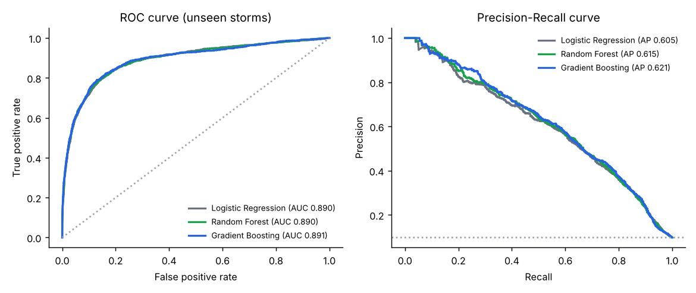
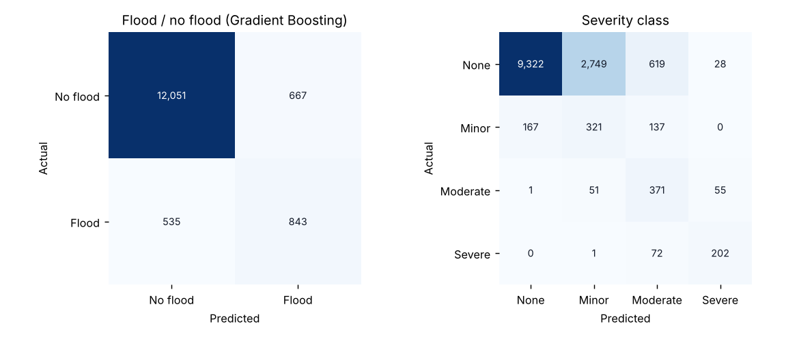
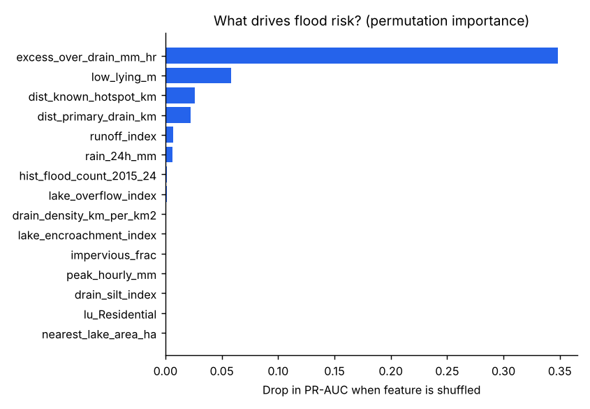
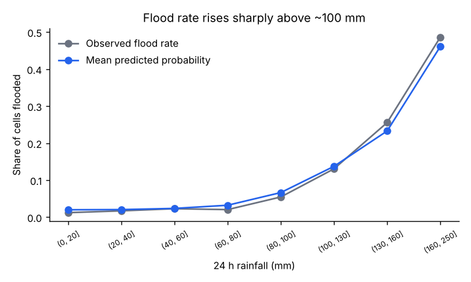

–
Areas (km²) predicted to flood
–
Expected people affected
–
Areas with moderate/severe flooding
–
Hospitals in flood-risk areas
Scenario
Bengaluru's worst recent days were ~130–180 mm (Sept 2022, Oct 2024).
Interventions
Desilt storm-water drains
Green infrastructure (10% less concrete)
Map layers
BBMP/KSNDMC flood hotspots
Lakes
Hospitals
Change the sliders and the model's predictions update instantly. Click any square on the map for details.
Zone vulnerability ranking
Highest-risk areas
Hospitals at risk
Check my area
Model comparison (tested on the 16 most recent storms, never seen in training)




Data: real BBMP/KSNDMC flood hotspots, lakes, primary drainage valleys and hospitals anchor the dataset; terrain, drain capacity and storm-by-storm flood outcomes are simulated because cell-level flood records are not publicly available. See DATA_SOURCES.md.